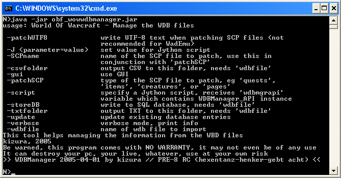
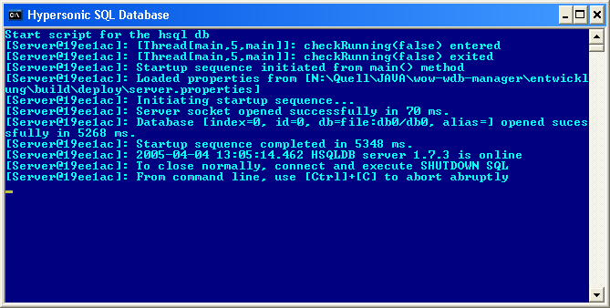

Der WoWWDB-Manager dient zur Verwaltung der WDB Dateien auf dem WoW Client.
Diese Dateien werden
beim Spielen auf einem Server automatisch angelegt und in dem
Verzeichnis „WDB“ zwischengespeichert.
Sinn der
Dateien ist es, die Netzlast möglichst gering zu halten.
Der
WoW Client beinhaltet die komplette Spiele-Welt, jedoch keine Quests,
NPCs oder MOBs. Diese Informationen werden von dem WoW Server an den
Client übermittelt und in den WDB Dateien gecacht.
Mit
dem Programm kann man:
Erzeugen einer CSV aus einer WDB
Erzeugen einer TXT Datei aus einer WDB
Importieren einer WDB in eine Datenbank (getestet mit Hypersonic, Oracle und MySQL)
Abgleich der Daten in der Datenbank mit einer quests.scp, items.scp, creature.scp, pages.scp (Es werden nur bestimmte Teile in den SCP durch Daten in der Datenbank ersetzt)
Aufruf über graphische Oberfläche, bzw. Konsole
Erweitern des Programms mit Jython Skripten
Kizura
Zgabi
kizroot007@yahoo.com
Linux oder Win32
Umgebung
Java 1.4.2 installiert
(Win32)
Das Archiv
in ein Verzeichnis entpacken.
Eingabeaufforderung öffnen
In
das Installationsverzeichnis wechseln
Programm aufrufen:
java -jar
obf_wowwdbmanager.jar
Ausgabe:

Anwendung
Parameter
csvfolder <ordner>
Angabe des Ordners für den CSV Export.
Dient der
Erzeugung einer CSV Datei aus dem Inhalt einer WDB Datei.
Kann
nur in Verbindung mit „wdbfile“
verwendet werden.
gui
Startet
die graphische Oberfläche. Alle anderen Parameter werden
ignoriert.
J
Angabe von
Parametern für das Jython Skript. Diese haben die Form
"-Jparam=wert"
script
Angabe
eines Jython Skripts. Dieses wird im Kontext des Managers ausgeführt
und erhält die Variable "wdbmgrapi" vom Typ
"WoWWDBManager_I". (Siehe JavaDocs)
storeDB
Speichern
der Werte aus der WDB Datei in einer Datenbank
Kann nur in
Verbindung mit „wdbfile“
verwendet werden.
txtfolder
<ordner>
Angabe des Ordners für den TXT Export.
Dient
der Erzeugung einer TXT Datei aus dem Inhalt einer WDB Datei. Die
TXT Datei kann für Debugging Zwecke verwendet werden.
Kann
nur in Verbindung mit „wdbfile“
verwendet werden.
update
Kann nur
in Verbindung mit „wdbfile“
verwendet werden. Mit "update" werden nicht nur neue
Einträge aus den WDB Dateien in die Datenbank übernommen,
sondern auch bestehene aktualisiert
verbose
Schaltet
in einen „ausführlichen“ Modus – es werden
mehr Ausgaben von dem Programm gemacht.
wdbfile
Angabe
des kompletten Pfades für die zu verwendende WDB Datei.
SCPName
<myFile.scp>
Name der zu patchenden SCP Datei.
Die in
der Datenbank vorhandenen Informationen werden mit den Einträgen
in der SCP Datei abgeglichen und es wird eine neue Datei mit der
Bezeichnung „<myFile.scp>_patch“ erstellt, welche
die geptachte Version beinhaltet. In <myFile.scp>_patch_info
werden Informationen über den Patch Verlauf angegeben.
Beispiele
java -jar obf_wowwdbmanager.jar -wdbfile
c:\temp\wdb\questcache.wdb -csvfolder c:\meine_csvs
java -jar obf_wowwdbmanager.jar -wdbfile
c:\temp\wdb\questcache.wdb -txtfolder c:\meine_txts
java -jar obf_wowwdbmanager.jar -wdbfile
c:\temp\wdb\questcache.wdb -csvfolder c:\meine_csvs
-txtfolder c:\meine_txts
java -jar obf_wowwdbmanager.jar -wdbfile
c:\temp\wdb\questcache.wdb -storeDB -update
Eine vorhandene quests.scp, items.scp, etc. wird mit den Werten aus der Datenbank ersetzt. Die Konfiguration, was ersetzt werden soll, wird in der Datei "patchSCP.xml" vorgenommen und kann vom Anwender selbst angepasst werden.
Werte für "patchSCP":
quests, items, creatures, pages
java -jar
obf_wowwdbmanager.jar -patchSCP quests -SCPname /tmp/myQuests.scp
java -jar obf_wowwdbmanager.jar -gui
java -jar obf_wowwdbmanager.jar -script
c:\temp\myScript.jy -Jnase=baer
Aufruf des Skripts
"c:\temp\myScript.jy" und Übergabe des Parameters
"nase" mit dem
Wert "baer".
Hiermit ist in dem Jython Script eine Variable namens "nase"
verfügbar.
WoWWDBManager
unterstützt 3 Datenbanken:
Oracle (9i getestet)
MySQL
Hypersonic SQL
Datenbank 1.7.3
(wird mitgeliefert)
wdbmanager_sql.properties
|
# |
Vorab:
Skripte für Win32
haben die Endung .bat
Skripte für Linux haben die Endung .sh
In dem
Installationsverzeichnis befindet sich die Datei
„start_hsqldb“.
Dieses Skript startet die Hypersonic
SQL Datenbank.
(Auf diese Datenbank kann über JDBC
zugegriffen werden, Benutzername/Passwort sind der Datei
wdbmanager_sql.properties
zu entnehmen.
Sollen andere Datenbanken verwendet werden, so
ist das Skript „wdbmanager_sql.properties“
anzupassen.

Start der Hypersonic
SQL Datenbank
Beschreibung der WDB-Dateien
creaturecache.xml
gameobjectcache.xml
itemcache.xml
itemnamecache.xml
itemtextcaxhe.xml
npccache.xml
pagetextcache.xml
questcache.xml
|
<?xml
version="1.0" encoding="UTF-8"?> |
pagetextcache.xml
|
WoWWDB-Manager by Kizura ZGabi Version: Version PRE 9 – "die goldene Kettet" |
Seite |